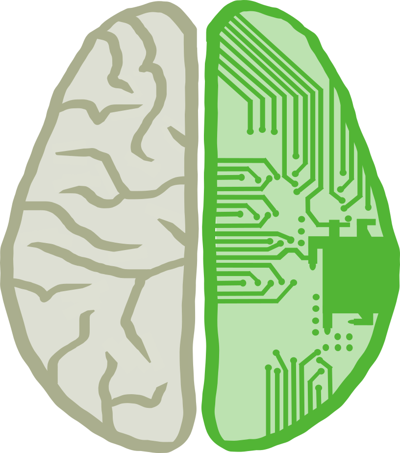
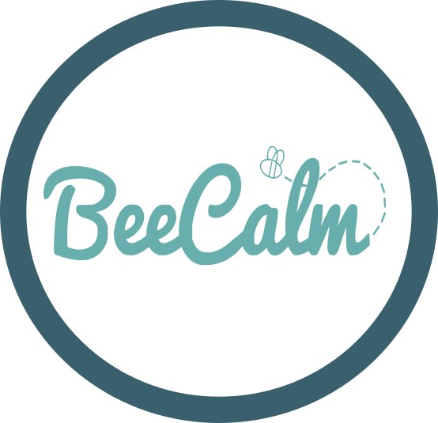
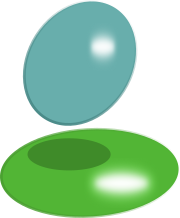

U.C. Berkeley, Class of December 2016
B.A. Cognitive Science
Cognitive Science at U.C. Berkeley is a compilation of classes from six fields: Neuroscience, Psychology, Linguistics, Computer Science, Philosophy, and Sociology. The ideology behind this is that each field individually contributes a unique perspective of the brain and to get a full picture, we must be well-versed in all of these subjects. My favorite classes included Psychology of Sleep, Computational Modelling of Cognition, and Introduction to Linguistics.

B.A. Computer Science
U.C. Berkeley's Computer Science program is a comprehensive, competitive major. Before officially declaring C.S., students take courses in linear algebra, basic computer science principles, data structures, and machine structures and gain experience in Python, Java, and C. Upper Division courses are even more dynamic and require quickly learning new languages and concepts. My favorite classes included Introduction to Design, Computer Graphics, and Machine Learning.
Favorite Projects


BeeCalm Android Mobile/Wear App
Introduction to User Interface Design (CS160)
View on Github
Collaborators: Ilakya Palanisamy · Fendy Soegiono · Zhuosi Wang · Stephanie Lin
This course was split into two distinct pieces: the first half consisted of lectures on the design process and individual projects of Android mobile and watch coding, while the second half of the course saw us divided into groups and working through the entire design process on a final project. The day we met our groups, we began the brainstorming process with only the constraints of 'Android watch' and 'medical field' to narrow down our focus. Our team eventually settled on a discreet app that people struggling with panic attacks can use to calm down whilst fighting one off. We went through several iterations of the design cycle, beginning with low-fidelity paper models and working our way up to high-fidelity mock-ups in Figma, conducting user interviews at each step. The final app was designed as a multifaceted tool for those with panic disorder. Our user interviews taught us that different strategies work for different people so we developed a collection of techniques that could be used to either calm the mind or calm the body: deep breathing exercises guided by an expanding and contracting moving amorphous shape; a basic colorful version of 'Simon Swipe'; mantras that the user can record themselves or a loved one saying for later playback; a collection of yoga poses; and a simple display of the user's heartrate so they can practice biofeedback and actively try to lower it. For a brief overview of our entire process, check out our presentation here .
Transactions and Concurrency Control
Introduction to Database Systems (CS186)
View on Github
Collaborators: None, though please note the pieces written by the course staff
I walked into CS186 thinking it was going to be a dull, but necessary class considering how much our world is becoming reliant on data. I was surprised to find how much I actually enjoyed the material and how interesting I found the challenges of querying, sorting, and accessing huge amounts of data concurrently. I was struck by the ingenuity of the solutions to these problems. One of my favorite projects in this class required us to build a lock table system to handle multiple transactions (series of reads and writes to the database). The system we wrote followed strict two-phase locking. In Strict 2PL, transactions acquire shared locks for reading and exclusive locks for writing and they release all of their locks immediately upon a commit or abort, allowing the next transaction in line to aquire them. With a system like this, it is possible for a deadlock to occur. For example if Transaction 1 is reading page A while Transaction 2 is writing to page B and then T1 wishes to read page B while T2 is waiting to write to page A, a deadlock has been formed. T1 will not give up any of its locks until is has read A and B, however it cannot aquire the lock for B because T2 has it and won't give it up until it can write to A which it cannot do while T1 has that lock. With deadlocks, one can either set up a system to avoid them or to detect them and in this project, we implemented deadlock detection. I created and maintained a 'Waits-For' graph depicting which transactions were waiting for locks from which transactions and I checked for cycles in the graph. If a cycle was detected, this signalled a deadlock and one of the involved transactions was aborted.
Computer Graphics was an incredibly intimidating course for me. I was taking linear algebra concurrently so I did not have the strong mathematics background the course demanded. However, I was fascinated by the subject material and told myself I would just teach myself the mathematics as I went along. I am so grateful I decided to stick with it because it became one of the best classes I have taken at U.C. Berkeley. It was not an easy course, but the understanding and appreciation of the work that goes into graphics we see all around us made it well worth it. This project in particular was hands-down the most challenging project I've ever had to do. We had learned about raytracing in class for a couple of lectures and a discussion before Professor O'Brien told us to build one ourselves from scratch. Armed with only a design note and a journal of the project from a previous student, Matt and I felt lost for two of the four weeks we had to complete the assignment. We began by writing the simple classes: rays, points, matrices, colors, etc. Matt spent a week writing an entire set of linear algebra classes for us to use. Eventually, after sitting in office hours and spending some long days (and nights) sketching on the whiteboard, coding, and debugging, we managed to pull off the project I am most proud of to this date. Our raytracer takes in a file with the position of the camera, position and types of lights, materials and positions of shapes. It then sends a ray through each pixel of the scene and if it intersects with a shape, calculates what to display, taking into account shadows, reflections, material, etc.
Horse
Efficient Algorithms and Intractable Problems (CS170)
View on Github
Collaborators: Caroline Kim · Emily Pedersen · Ruihan Zhao
Efficient Algorithms was one of the toughest, most useful classes I took at U.C. Berkeley. We covered everything from divide and conquer algorithms to dynamic and linear programming. All of this culminated in a single final project in which we attempted to find a high-performing approximate solution to an NP-hard problem. The premise was as follows: you are given a graph of horses that you must divide into teams. A horse can be on a team with another horse if there is a directed edge connecting one to the other. Each horse has a performance value and the total performance value of the team is equal to the sum of the values of individual horses, multiplied by the number of horses on the team. The algorithm we implemented to solve this problem was a greedy one with certain optimizations. For example, if the graph had fewer tham 15 horses, we ran a brute force algorithm on it to come up with every possible combination of teams before choosing the set with the highest performance value. However, the graphs could have up to 500 horses so brute force quickly became infeasible. Instead we gave each horse the chance to be the 'start' node if it had outgoing edges and then formed the highest-value possible team with that node. Then we deleted the path from the graph and randomly picked a new start node and continued. If the graph had 500 horses, we formed 500 sets of teams and then picked the highest value set. See the README on Github for more details.
Inverse Kinematics
Fundamentals of Computer Graphics (CS184)
View on Github
Collaborators: Matthew Quinn
The goal of this project was to solve an inverse kinematics problem for an arm of at least four links, connected by ball joints. An inverse kinematics problem consists of calculating each joint angle such that the end effector (tip of the arm) is in a desired location. Our final product was an animation that demonstrated the arm tracking a goal that moved along a non-linear path.
Additional Acheivements

I am proud and honored to call myself a member of Phi Beta Kappa since 2015. Founded in 1776, Phi Beta Kappa invites the top 10% of liberal arts and sciences students at select universities to join this honors society. It is both humbling and inspiring to share this status with past U.S. Presidents, Supreme Court Justices, and Nobel Laureates.
In December, 2016 I graduated from U.C. Berkeley with High Honors and a GPA of 3.936.
For 4 weeks in the summer of 2016 I studied web development in Cape Town, South Africa through the program I_Xperience. It was one of the most useful skills I have learned and in the most beautiful setting too! Our studies were punctuated by hikes up Table Mountain, diving with Great White Sharks, and surfing at the picturesque Muizenberg beach.